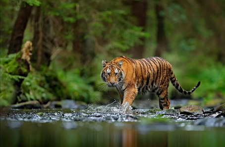

Periyar
National Park And Wildlife Sanctuary
Periyar National Park and Wildlife Sanctuary (PNP) is a protected area located in the districts of Idukki and Pathanamthitta in Kerala, India. It is notable as an elephant reserve and a tiger reserve. The protected area encompasses 925 km2 (357 sq mi) of which 305 km2 (118 sq mi) of the core zone was declared as the Periyar National Park in 1982. The park is a repository of rare, endemic and endangered flora and fauna and forms the major watershed of two important rivers of Kerala, the Periyar and the Pamba.
The park is located high in the Cardamom Hills and Pandalam Hills of the south Western Ghats along the border with Tamil Nadu. It is 4 km (2.5 mi) from Kumily, approximately 100 km (62 mi) east of Kottayam, 110 km (68 mi) west of Madurai and 120 km (75 mi) southeast of Kochi.
The first official action towards the conservation of wildlife and biodiversity in Kerala was taken in 1934 by the Maharaja of Travancore, Chithira Thirunal Balarama Varma, by declaring the forests around Periyar lake as a private game reserve to stop the encroachment of tea plantations. It was founded as Nellikkampatty Game Reserve. It was consolidated as a wildlife sanctuary in 1950 after the political integration of India.
Gallery
